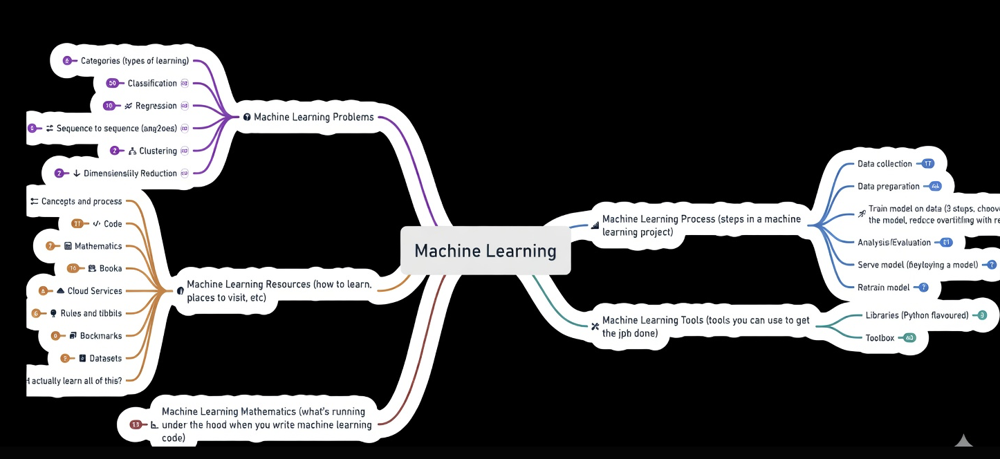
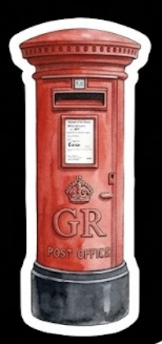
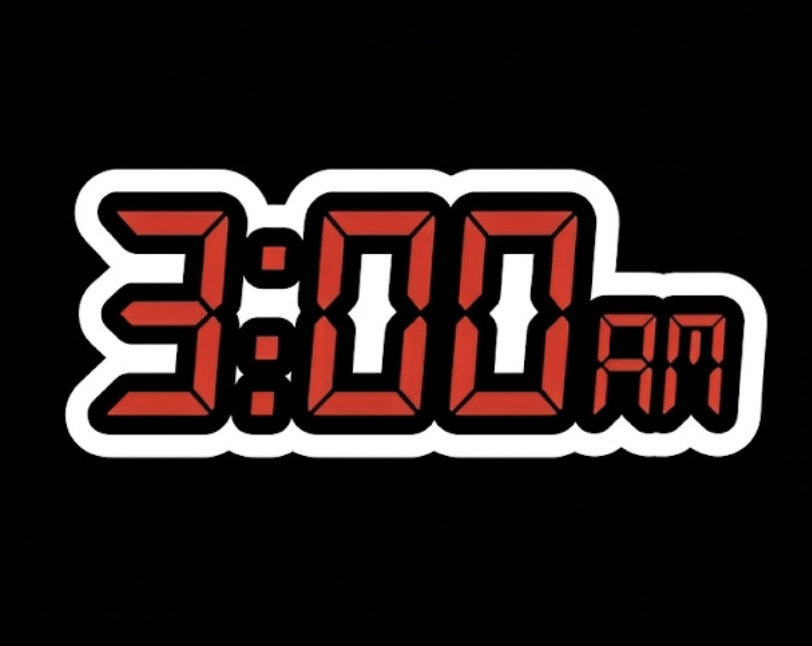
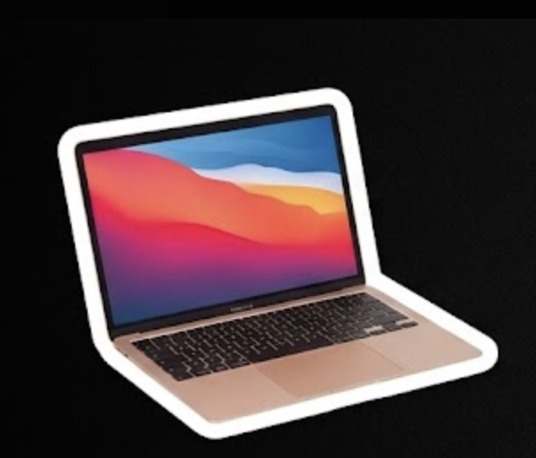
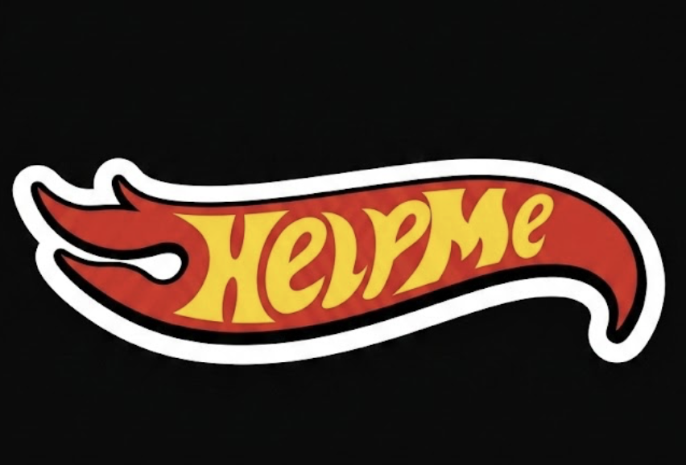
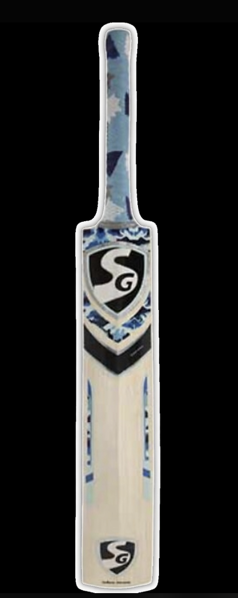

I’m Pritam, a 19-year-old still figuring things out—but with a clear sense of what I’m moving towards. I have a lot of dreams, but they all point in one direction: building something meaningful in the world of AI. The goal is to one day create an AI SaaS startup, something that solves real problems and actually matters. Right now, I’m in the phase where I’m learning, experimenting, and slowly connecting the dots. I’ve been learning Python and Java, both in and outside the classroom, and I’m currently diving deeper into mathematics for machine learning. Math has always been something I genuinely enjoy—almost like a reset button. When things get overwhelming, I go back to solving problems. It’s a habit I picked up when I was younger: if you can solve something complex on paper, maybe you can solve what life throws at you too. It doesn’t always make things easier—but it helps me keep going. Lately, I’ve been studying through online resources, textbooks, and courses, including the Machine Learning Specialization by Andrew Ng. Alongside that, I’m continuing to strengthen my programming skills and understand how everything connects in practice. Outside of tech, I enjoy cricket—and I tend to lose track of time when I’m deeply focused on something I care about. That’s something I’m learning to use as a strength. I’m also planning to step into content creation and start participating in hackathons, putting my skills to the test and learning by building. This is all part of the process. I don’t have everything figured out yet. But I’m learning, showing up, and moving forward—one step at a time.






Self-taught Machine Learning enthusiast on a mission.
I love building small ML projects and watching models learn from data.
Currently deep into the roadmap . PyTorch, computer vision, NLP, and everything in between.
Every new project makes me go “this is so cool!”
Still early in the journey, but fully hooked.
I watch films across every genre from intense dramas and thrillers to quirky comedies
and artistic masterpieces.My all-time favorite is Once Upon a Time in Hollywood.
I can easily spend entire weekends binge-watching movies.